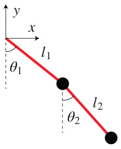

The Double Pendulum is a simple yet rich physical system. The motion of the pendulums is governed by a pair of coupled differential equations, which we will solve using the Euler method. To simulate the system let's first create the methods to draw the balls and the strings that hold them together.
Now, we have to figure out the way the strings and the balls are going to move, i.e., we need to solve the equations of motion for the system. Let's start by expressing the cartesian coordinates of the two pendulums

$$x_1 = l_1\sin \theta_1$$
$$y_1 = -l_1\cos \theta_1$$
$$x_2 = l_1\sin \theta_1 + l_2\sin \theta_2$$
$$y_2 = -l_1\cos \theta_1 -l_2\cos \theta_2$$
We will solve the equations of motion in polar coordinates and we are going to use the Lagrangian $L = T- V$ to derive them.
The Kinetic energy of the system is
$$T = \frac{1}{2}m_1(\dot{x_1}^2+\dot{y_1}^2)+\frac{1}{2}m_2(\dot{x_2}^2+\dot{y_2}^2)$$
which expressed in polar coordinates is
$$T = \frac{1}{2}m_1h_1^2\dot{\theta_1}^2+\frac{1}{2}m_2\left(h_1^2\dot{\theta_1}^2+h_2^2\dot{\theta_2}^2+2h_1h_2\dot{\theta_1}\dot{\theta_2}\cos(\theta_1-\theta_2)\right)$$
The potential energy of the system is
$$V = m_1gy_1+m_2gy_2 = -(m_1+m_2)gl_1\cos \theta_1 - m_2 g l_2 \cos \theta_2 $$
The Lagrange equations for $\theta_1$ and $\theta_2$ are
$$ \frac{d}{dt}\left(\frac{\partial L}{\partial\dot{\theta_i}}\right) - \frac{\partial L}{\partial \theta_i} = 0 $$
Working out the details of the two Lagrange equations, we end up with
$$ \ddot{\theta_1} =\frac{g\left(\sin \theta_2 \cos (\theta_1-\theta_2)- \mu\sin \theta_1\right)-\left(l_2\dot{\theta_2}^2+l_1\dot{\theta_1}^2\cos (\theta_1-\theta_2)\right)\sin (\theta_1-\theta_2)}{l_1\left(\mu-\cos^2 (\theta_1-\theta_2)\right)}$$
$$ \ddot{\theta_2} = \frac{g\mu(\sin \theta_1\cos (\theta_1 - \theta_2) - \sin \theta_2)+\left(\mu l_1\dot{\theta_1}^2+l_2\dot{\theta_2}^2\cos(\theta_1-\theta_2)\right)\sin(\theta_1-\theta_2)}{l_2\left(\mu-\cos^2 (\theta_1-\theta_2)\right)}$$
where $ \mu = 1 + \frac{m_1}{m_2}$.
Now, to solve the equations of motion for the angles we can use the Euler method. To do that we just have to define a time interval and iterate over time.
The angular accelerations, velocities and positions for the instant $t+\Delta t$ are all calculated using the same variables in $t$. Once we calculate the new angles we just need to update the positions of the balls and strings and re-draw the elements.
And there you have it, a simulation of the double pendulum written in less than 100 lines of javscript! Go ahead and play with the demo! [Source] Learn more about the double pendulum on wikipedia.
Click here if you think you can make it more interesting